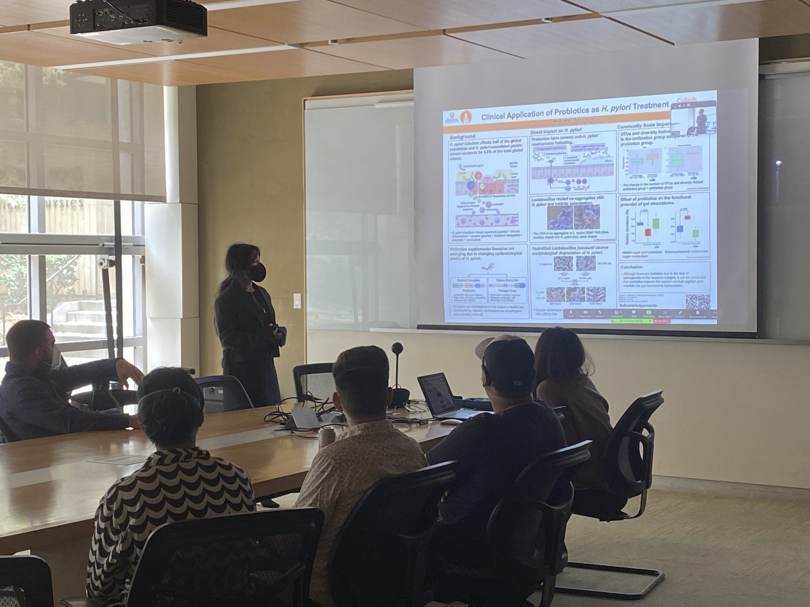

Alix Kang
Caltech Connection 2022
Photograph by Jennifer Palmer
Caltech Connection is a program to connect undergraduate students at local minority-serving institutions with Caltech graduate students for one-to-one mentorship, founded by Caltech Professor Scott Cushing in 2020. This year, our undergraduates came from Charles Drew University, Compton College, and Pasadena City College. Caltech Connection is student-led, with each mentor/mentee pair designing their own research project.
My mentee, Alix, was a sophomore at Pasadena City College (PCC), a community college. She is a nontraditional student, returning to school after a career as a fashion designer with the goal of becoming a physician's assistant. For her project with me, she decided to perform a literature review of the effects of probiotics on H. pylori infection and associated gastritis. Over the course of the project, I mentored Alix in reading and critiquing scientific literature, understanding scientific methods, and scientific communication.
Learning outcomes
Understanding scientific literature and methods
Alix had previously read a couple primary literature articles for classes, but did not have further experience independently reading and critiquing scientific literature. During the spring semester, each week, she chose a journal article pertaining to her topic and read it on her own. Then, we met to discuss. She presented her understanding of the results and points on which she was unsure. I explained methods and results she wasn't sure about. In addition, I assisted Alix in thinking about the context of the research she had read about (e.g. any conflicts of interest, or prior papers she could read), and in analyzing whether the results presented within an article or between different articles were consistent.
Scientific communication
Alix prepared a written review paper synthesizing what she had learned from the articles she read over the course of the semester. I provided advice on structuring scientific writing and managing citations.
In addition, Caltech Connection hosted a digital poster session at the end of the semester, during which all the undergraduates had the opportunity to project their poster and present it to the audience. I mentored Alix in preparing an effective poster, taking into account the brief time limit of the digital poster format and the distance at which the audience would view the digital poster.
Alix will begin her junior year at UCLA as a transfer student in Fall 2022.